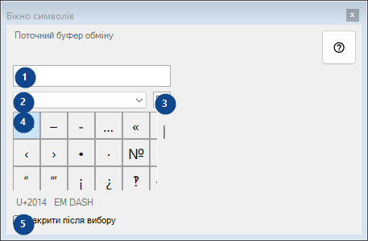
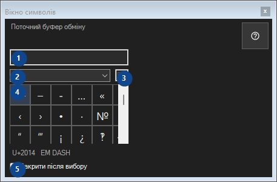

Вікно символів
Для чого це вікно
Палітра рідкісних символів: клік копіює символ у буфер обміну; все залишається на цьому комп'ютері.


Порядок дій
Прочитайте пояснення до номерів, виберіть потрібні значення та продовжте командою вікна.
Елементи
1. Поточний буфер обміну
Поточний буфер обміну
Ваші сполучення клавіш2. Набір символів
Набір символів
Ваші сполучення клавіш3. Пошук символів
Пошук за назвою, ключовими словами або кодом Unicode
Ваші сполучення клавіш4. Сітка символів
U+2014 EM DASH
Ваші сполучення клавіш5. Закрити після вибору
Закрити після вибору
Ваші сполучення клавіш